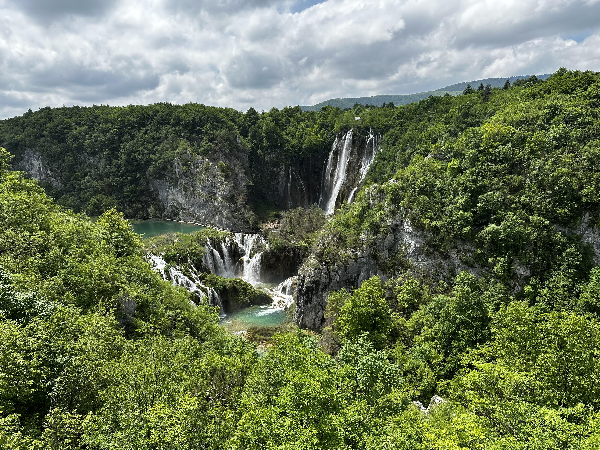
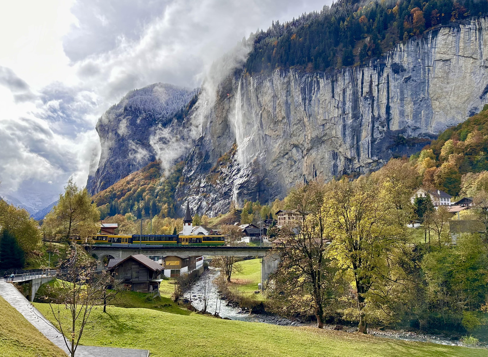
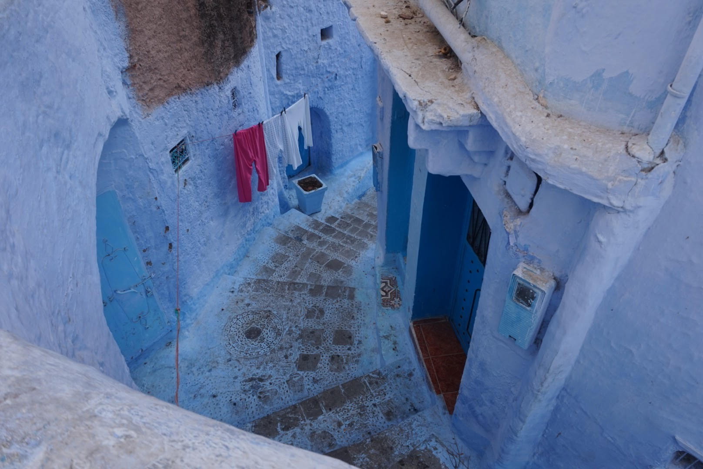
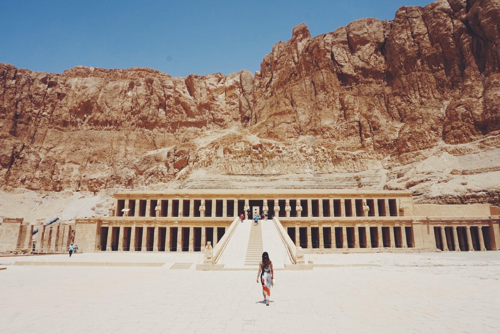

My Travel Book
Japan

Japan is an island country in East Asia, located in the Pacific Ocean off the northeast coast of the Asian mainland. It is bordered on the west by the Sea of Japan and extends from the Sea of Okhotsk in the north to the East China Sea in the south. Japan is an archipelago that consists of over 6,852 islands, four of which are the largest: Honshu, Hokkaido, Kyushu, and Shikoku. Honshu is the largest island and is where the capital city, Tokyo, is located.
more...Croatia
Croatia, officially the Republic of Croatia, is a beautiful country located at the crossroads of Central and Southeast Europe. Its stunning coastline stretches along the Adriatic Sea, offering a picture-perfect backdrop for a vacation.
more...Switzerland
Switzerland, officially the Swiss Confederation, is a landlocked country located in west-central Europe. It is bordered by Italy to the south, France to the west, Germany to the north, and Austria and Liechtenstein to the east. Switzerland is geographically divided among the Swiss Plateau, the Alps, and the Jura Mountains; the Alps occupy the greater part of the territory, whereas most of the country's population of 9 million are concentrated on the plateau, which hosts its largest cities and economic centers, including Zurich, Geneva, and Basel.
more...Morocco
Morocco, officially the Kingdom of Morocco, is a country steeped in history and culture, located in the Maghreb region of North Africa. Bordered by the Atlantic Ocean to the west and the Mediterranean Sea to the north, Morocco offers a unique blend of Berber, Arabian, and European influences.
more...Egypt
Absolutely! Egypt, cradled by the life-giving Nile River, boasts a rich history and culture that stretches back millennia. Here's a whirlwind tour of this fascinating country
more...Mexico
Mexico, officially the United Mexican States, is a land of rich culture, stunning natural beauty, and a fascinating history. Located in the southern portion of North America, Mexico boasts a unique blend of indigenous and European influences, reflected in its food, music, art, and traditions. Here's a glimpse into what makes Mexico so special:
more...